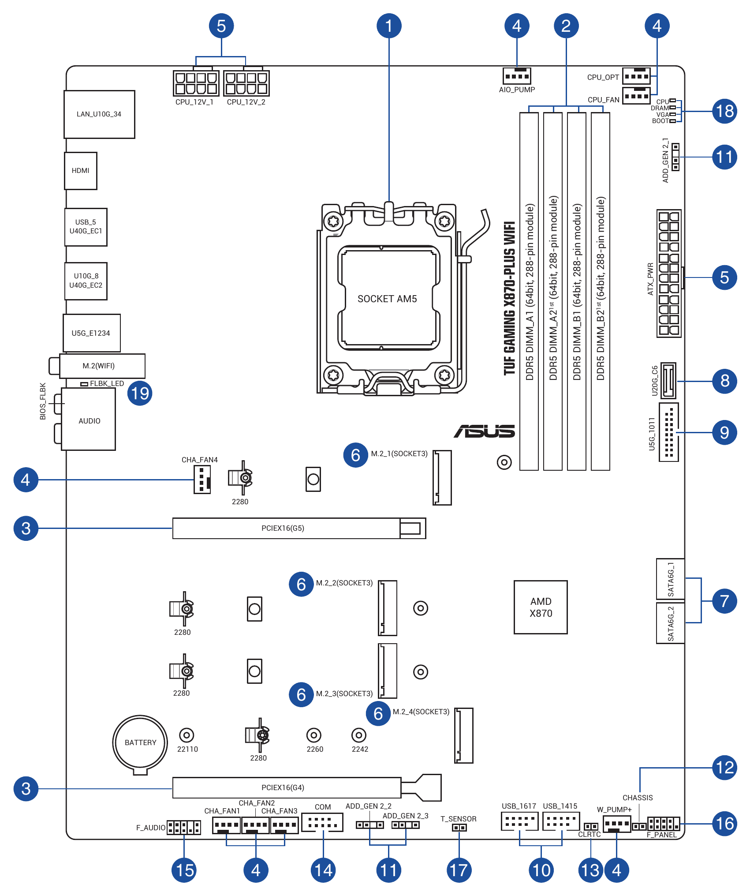

0221 · Montaje y mantenimiento de equipo · Tema 3 (UT3) · Ejercicios
Ejercicios — Placa base, procesador, memoria, adaptadores y chasis
Mapa de boletines
- Boletín 1 · Placa baseFormatos, conectores, panel frontal y manual · CE e, g · 5 ejercicios
- Boletín 2 · Procesador y refrigeraciónNombres, zócalos, consumo, disipadores y ventiladores · CE c, d · 8 ejercicios
- Boletín 3 · Memoria y expansiónLatencia, canales, PCIe y M.2 · CE e, j · 7 ejercicios
- Boletín 4 · UEFI, gráfica, monitor y chasisDiagnóstico, alimentación, ancho de banda, cajas y accesorios · CE f, g, i, j, k · 10 ejercicios
- Boletín 5 · Placas base realesIdentificar los componentes con el esquema del manual · CE e, f, k · 1 placa
Boletín 1 · Placa base
Repasa los apartados 3.1 y 3.2 y practica con la placa interactiva.
1.1 CE e ¿Qué formato tiene una placa de cada una de estas medidas? 305 × 244 mm · 244 × 244 mm · 170 × 170 mm · 305 × 330 mm.
1.2 CE g Indica si cada placa cabe en cada caja y explica la regla que aplicas.
| Placa | Caja que admite como máximo… |
|---|---|
| a) Micro-ATX | ATX |
| b) ATX | Micro-ATX |
| c) Mini-ITX | Micro-ATX |
| d) E-ATX | ATX |
1.3 CE e Encuentras estos
rótulos serigrafiados en una placa. Para cada uno, di qué se conecta ahí:
CPU_FAN, ATX12V, JFP1,
USB3_1, HD_AUDIO, CLR_CMOS,
ADD_GEN2, SYS_FAN2.
1.4 CE e Del panel frontal de una caja salen estos cables: POWER SW, RESET SW, POWER LED +, POWER LED –, HDD LED + y HDD LED –. Con la distribución habitual del apartado 3.2.2, indica en qué pin va cada uno. ¿Cuáles tienen polaridad? ¿Qué pasa si un LED se conecta al revés?
1.5 CE e CE k Descarga el manual de una placa base real con chipset B650 o B760 (de ASUS, MSI, Gigabyte o ASRock) y completa: formato y medidas; chipset y zócalo; número de ranuras de memoria y capacidad máxima; ranuras M.2 (a qué van conectadas y cuáles comparten con SATA o PCIe); puertos SATA; conectores de ventilador; ¿tiene botón de BIOS Flashback?
Boletín 2 · Procesador y refrigeración
Repasa los apartados 3.3, 3.4 y 3.5. Puedes comprobar los nombres con el decodificador de la teoría después de pensarlos.
2.1 CE c Explica qué significa cada parte de estos nombres y qué zócalo usa cada procesador: Core i7-14700KF · Core Ultra 9 285K · Ryzen 5 7600X · Ryzen 7 5700X3D · Core i5-13420H · Ryzen 5 8500G.
2.2 CE c Observa la tabla y responde.
| Procesador A | Procesador B | |
|---|---|---|
| Nombre | Core i5-14600KF | Ryzen 5 8600G |
| Núcleos / hilos | 14 (6P + 8E) / 20 | 6 / 12 |
| Frecuencia turbo | 5,3 GHz | 5,0 GHz |
| Consumo | 125 W base, 181 W turbo | 65 W TDP |
| Gráfica integrada | — | Radeon 760M |
a) ¿Cuál puede funcionar sin tarjeta gráfica? b) ¿Cuál necesita una refrigeración más potente? c) ¿Qué placa (zócalo y gama de chipset) elegirías para aprovechar la K del procesador A? d) ¿Es justo comparar sus frecuencias turbo para saber cuál es más rápido? ¿Por qué?
2.3 CE c Al montar un equipo, ¿qué es más delicado de manipular, un procesador PGA o un zócalo LGA? ¿Qué se hace con la tapa protectora de un zócalo LGA? ¿Por qué no puedes cambiar el procesador de un portátil?
2.4 CE c En AMD, el consumo máximo real (PPT) es 1,35 veces el TDP. Calcula el PPT de procesadores con TDP de 65 W, 105 W, 120 W y 170 W.
2.5 CE d CE g Un procesador consume 125 W de base y 253 W en turbo. La caja admite disipadores de hasta 165 mm y radiadores de hasta 280 mm. Opciones: a) básico, 55 mm, hasta 95 W; b) torre, 155 mm, hasta 180 W; c) doble torre, 168 mm, hasta 250 W; d) AIO de 360 mm, hasta 300 W. ¿Cuáles se pueden montar? ¿Cuál elegirías y qué consecuencia tendrá? ¿Qué propondrías al cliente?
2.6 CE d Conectas un ventilador de 3 pines a un conector de 4 pines configurado en modo PWM. ¿Qué hará el ventilador? ¿Qué cambiarías en la UEFI?
2.7 CE d Una caja tiene tres ventiladores delanteros, uno trasero y dos superiores, todos de 60 CFM. a) ¿Cuáles deberían meter aire y cuáles sacarlo? b) ¿Qué presión resulta (positiva o negativa)? c) ¿Cuántos m³/h entran?
2.8 CE d Escribe el procedimiento completo para cambiar la pasta térmica de un procesador: material, pasos y precauciones.
Boletín 3 · Memoria y expansión
Repasa los apartados 3.6 y 3.7.
3.1 CE e Calcula la latencia real en nanosegundos y ordena de menor a mayor: DDR4-2666 CL19 · DDR4-3200 CL16 · DDR5-5200 CL40 · DDR5-6000 CL36 · DDR5-6400 CL32.
3.2 CE e Calcula el ancho de banda máximo: a) DDR5-5600 en doble canal; b) el mismo con un solo módulo; c) DDR4-3200 en doble canal.
3.3 CE e CE f Un cliente ha comprado un kit DDR5-6000 y CPU-Z le muestra «DRAM Frequency: 2400 MHz». ¿A cuántos MT/s está funcionando? ¿Está estropeado? ¿Qué hay que hacer?
3.4 CE e Una placa tiene las ranuras A1, A2, B1 y B2. ¿Dónde pondrías uno, dos y cuatro módulos? ¿Qué es mejor para 32 GB: un módulo de 32 GB o dos de 16 GB? ¿Y para 64 GB con DDR5: dos de 32 GB o cuatro de 16 GB?
3.5 CE j Calcula el ancho de banda por sentido: a) SSD PCIe 4.0 x4; b) SSD PCIe 5.0 x4; c) gráfica PCIe 4.0 x8 en una ranura PCIe 3.0 x16; d) gráfica PCIe 5.0 x16 en la ranura x16 inferior de la placa, que es PCIe 4.0 x4.
3.6 CE e CE k Fragmento del manual de una placa: «M2_2 comparte el ancho de banda con SATA6G_5 y SATA6G_6. Si se instala un SSD SATA en M2_2, SATA6G_5 se desactiva. Si se instala un SSD PCIe en M2_2, SATA6G_5 y SATA6G_6 se desactivan. Si se ocupa M2_3, PCIEX16_2 funciona en modo x2». El cliente tiene un SSD NVMe en M2_1, otro en M2_2, dos discos duros y una tarjeta de captura PCIe x4. ¿Dónde conectas cada cosa para que todo funcione?
3.7 CE e CE j ¿Qué llave M.2 tiene cada dispositivo y en qué ranura lo pondrías? a) SSD NVMe 2280; b) tarjeta Wi-Fi 7 con Bluetooth para un mini PC; c) SSD M.2 SATA. ¿Cabe un SSD 22110 en una ranura que admite 2242, 2260 y 2280?
Boletín 4 · UEFI, gráfica, monitor y chasis
Repasa la teoría 2 y el simulador de UEFI.
4.1 CE f ¿Dónde se guardan el firmware, los ajustes de la UEFI y la hora? ¿Qué se pierde si se agota la pila? ¿Qué hace Clear CMOS?
4.2 CE f Diagnostica cada caso: a) se queda encendido el LED CPU después de cambiar el procesador por uno de una generación más nueva; b) se queda el LED DRAM después de activar XMP; c) se queda el LED VGA en un equipo con Ryzen 5 5600 y sin tarjeta gráfica; d) se queda el LED BOOT tras desconectar un SSD.
4.3 CE f a) ¿Puede arrancar Windows desde un disco de 3 TB con tabla MBR? b) ¿Qué tres opciones de la UEFI revisarías para instalar Windows 11? c) ¿Por qué hay que desactivar el CSM para usar Secure Boot?
4.4 CE i CE j ¿Reciben suficiente potencia estas tarjetas gráficas? a) 250 W con dos conectores de 8 pines; b) 140 W con uno de 6 pines; c) 75 W sin conector; d) 320 W con un conector de 8 pines.
4.5 CE i Calcula el ancho de banda de la VRAM (ancho de bus ÷ 8 × velocidad por pin): a) 128 bits, GDDR6 a 18 Gbit/s; b) 192 bits, GDDR6X a 21 Gbit/s; c) 256 bits, GDDR7 a 30 Gbit/s.
4.6 CE i Calcula la densidad en píxeles por pulgada: a) 24″ Full HD; b) 27″ QHD; c) 27″ 4K; d) 32″ 4K. ¿Cuál se ve más nítido?
4.7 CE i ¿Qué conector usarías sin compresión para cada monitor? a) 4K a 144 Hz con HDR de 10 bits; b) QHD a 240 Hz con 8 bits; c) Full HD a 360 Hz con 8 bits. Usa la fórmula del apartado 3.10.1 (añade un 7 %) y compruébalo con la calculadora.
4.8 CE g Compara dos cajas para este equipo: placa ATX, gráfica de 320 mm, disipador de torre de 158 mm y dos discos de 3,5″.
| Caja 1 | Caja 2 | |
|---|---|---|
| Formatos | ATX, micro-ATX, Mini-ITX | ATX, micro-ATX, Mini-ITX |
| Gráfica máxima | 330 mm | 360 mm |
| Disipador máximo | 155 mm | 165 mm |
| Bahías 3,5″ | 2 | 1 (+ 2 de 2,5″) |
| Panel frontal | 2 × USB-A 5 Gbit/s, audio | 2 × USB-A, 1 × USB-C 10 Gbit/s, audio |
| Frontal | Cristal cerrado | Malla con filtro |
¿Cuál sirve? Si ninguna sirve del todo, ¿qué cambiarías? ¿Qué conector necesita la placa para el USB-C frontal de la caja 2?
4.9 CE k Haz una lista de todo lo que esperas encontrar al abrir la caja de una placa base, de una tarjeta gráfica y de un disipador de torre, con la utilidad de cada cosa. ¿Qué controladores instalarías después de montar el equipo, y en qué orden?
4.10 CE g ¿Cuánto mide de alto un servidor de 2U? ¿Y un armario de 42U, contando solo el espacio para equipos?
Boletín 5 · Placas base reales
Cada ejercicio de este boletín es una placa base de verdad, con el esquema que trae su manual. Es lo que harás en el taller cada vez que te llegue una placa que no conoces: localizar cada conector con el esquema y la serigrafía y saber para qué sirve. Repasa el mapa de la placa base (3.2) y practica antes con la placa interactiva. Iremos añadiendo placas a lo largo del tema.
5.1 ASUS TUF GAMING X870-PLUS WIFI CE e CE f CE k
Este es el esquema de la placa que aparece en su manual (apartado 1.2, Motherboard layout). Los números azules señalan cada grupo de componentes; un mismo número puede aparecer en varios sitios cuando son componentes del mismo tipo.


a) Identifica los componentes. Copia esta tabla en LibreOffice Writer y complétala para los 19 números. En «Rótulos» escribe la serigrafía que aparece en el esquema; en «Qué es» y «Para qué sirve», con tus palabras.
| N.º | Rótulos en el esquema | Qué es | Para qué sirve / qué se conecta |
|---|---|---|---|
| 1 | |||
| 2 | |||
| … | |||
| 19 |
b) Procesador y chipset. ¿Qué zócalo tiene la placa? ¿Los contactos están en el zócalo o en el procesador? ¿Qué chipset lleva y dónde está? ¿Qué familias de procesadores admite? (Búscalo en la web de ASUS y anota la dirección.)
c) Alimentación. ¿Qué conectores del número 5 salen de la fuente? ¿Cuántos pines tiene cada uno? ¿Por qué el procesador tiene su propia alimentación?
d) Memoria. ¿Cuántas ranuras hay y de qué tipo de memoria? ¿Podrías poner un módulo DDR4? Si el cliente trae dos módulos, ¿en qué ranuras los pones? Fíjate en lo que indica el esquema junto al nombre de dos de ellas.
e) Ventiladores y bombas. Clasifica los conectores del número 4: ¿dónde conectas el ventilador del disipador del procesador? ¿Y la bomba de una refrigeración líquida AIO? ¿Cuántos ventiladores de caja puedes conectar sin usar un divisor? ¿Para qué crees que es W_PUMP+?
f) Panel frontal de la caja. La caja tiene botones de encendido y reinicio, LED, audio, dos USB-A de 5 Gbit/s, un USB-C de 20 Gbit/s y un lector de tarjetas con conector USB 2.0. Indica en qué conector de la placa (rótulo y número del esquema) va cada cable.
g) Ranuras de expansión y M.2. Fragmento de las especificaciones de la placa (con un Ryzen 7000 o 9000):
- PCIEX16(G5): PCIe 5.0 x16, conectada al procesador. Comparte ancho de banda con M.2_2: si se usa M.2_2, la ranura funciona en modo x8.
- PCIEX16(G4): PCIe 4.0, funciona en modo x4, conectada al chipset. Se desactiva si se usa M.2_4.
- M.2_1 y M.2_2: tipo 2280, PCIe 5.0 x4, conectadas al procesador.
- M.2_3: tipo 2280, PCIe 4.0 x4, conectada al chipset.
- M.2_4: tipos 2242, 2260, 2280 y 22110, PCIe 4.0 x4, conectada al chipset.
El cliente tiene una tarjeta gráfica PCIe 5.0 x16, un SSD NVMe PCIe 5.0 de tipo 2280, un SSD NVMe de tipo 22110 y dos discos duros SATA. ¿Dónde conectas cada cosa para que todo vaya a su máxima velocidad? Después quiere añadir una tarjeta capturadora PCIe x4: ¿dónde la pondrías y qué tendría que cambiar? ¿Qué significan «G5» y «G4» en el nombre de las ranuras?
h) Diagnóstico. Montas el equipo, lo enciendes y no se ve imagen. Se queda encendido el LED DRAM del número 18. ¿Qué revisarías, y en qué orden?
i) Panel trasero. El panel trasero de E/S está a la izquierda del esquema. Explica qué es cada rótulo (por ejemplo, U40G_EC1 o U5G_E1234). Con un Ryzen 7 9700X y sin tarjeta gráfica, ¿puedes conectar el monitor a esta placa? ¿Y con un Ryzen 5 7500F?
j) BIOS Flashback. ¿Qué es el número 19? ¿En qué situación lo usarías? ¿Qué necesitas y qué tendrías que hacer?
Qué entregas del boletín 5
Un ZIP con la memoria en PDF; en ella, un apartado por placa con la tabla de componentes y las respuestas.
- <usuario>_E35.zip
- <usuario>_E35.pdf (dentro del ZIP)
Comprueba antes de entregar
- La tabla tiene las 19 filas, y cada fila sus tres columnas rellenas.
- Cuando un número señala varios componentes (el 3, el 4, el 5, el 6, el 10 o el 11), están todos sus rótulos y se explica la diferencia entre ellos.
- En «Para qué sirve» dices qué se conecta (cable, tarjeta, dispositivo), no solo el nombre.
- Has respondido de la b) a la j) con el enunciado en negrita y, en la b), la dirección de la web de ASUS que has consultado.
Cómo debe quedar
Fallo más común: confundir los conectores que se parecen. Los tres conectores USB internos (8, 9 y 10) tienen tamaños y velocidades distintos, y los ARGB (11) no son de ventilador aunque estén al lado. Usa el rótulo de la serigrafía, no solo la forma.